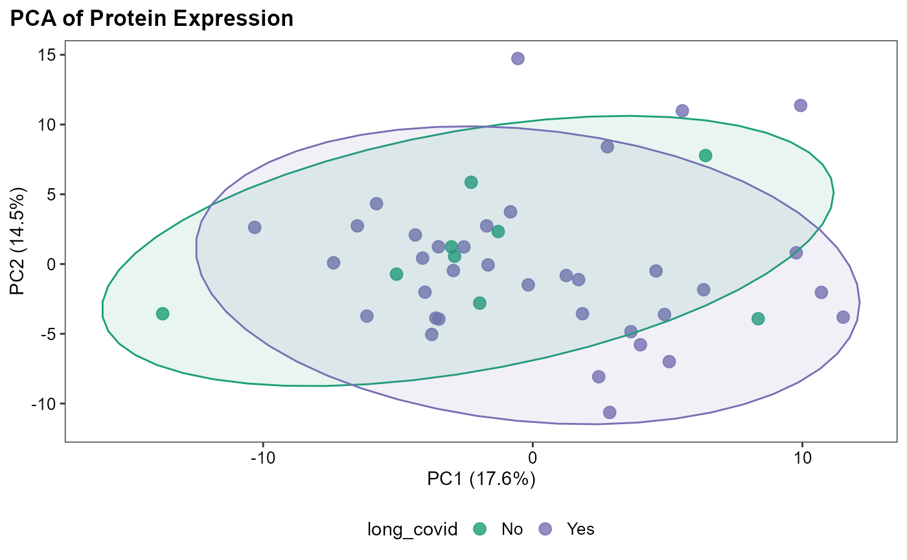

Coerce an OlinkExperiment to a long-format data.frame
Source:R/coercion.R
as.data.frame-OlinkExperiment-method.RdConverts an OlinkExperiment into the long-format data.frame
used by the OlinkViz plotting functions (one row per assay per sample).
The result contains a standard Assay (protein) column, a
SampleID column, one column per assay (e.g. NPX, LOD),
plus all colData (sample) and rowData (protein) columns.
Usage
# S4 method for class 'OlinkExperiment'
as.data.frame(
x,
row.names = NULL,
optional = FALSE,
probe_dups = c("keep", "panel_suffix", "olink_id"),
...
)Arguments
- x
An OlinkExperiment object.
- row.names, optional
Ignored (for compatibility with
as.data.frame).- probe_dups
How to format the
Assaycolumn when the same protein symbol appears on multiple rows (e.g. across Olink panels):"keep"(default; keeps rawAssaysymbols),"panel_suffix"(appends" (<Panel>)"to duplicated symbols), or"olink_id"(usesOlinkIDor appends" (<OlinkID>)").- ...
Further arguments (ignored).
Value
A long-format data.frame with columns Assay, SampleID,
the object's assays (e.g. NPX, LOD) and the sample/protein
metadata.
Details
Because every plot_*() function converts its data argument
with as.data.frame(), passing an OlinkExperiment to any of
them works directly:
plot_dim_reduc(oe, type = "pca", color = "Group"),
plot_boxplot(oe, assay = "IL6", group = "Group"), etc.
Examples
oe <- oe_from_long(iris_longcovid)
#> Auto-detected columns: sample_col = 'IRIS_number'
#> Multiple distinct metadata rows found for some samples; using the first row per sample
head(as.data.frame(oe))
#> Assay SampleID NPX IRIS_number Sex long_covid timing_month
#> 1 IL8 10 5.22489 10 Male No 3 months
#> 2 VEGFA 10 10.63263 10 Male No 3 months
#> 3 CD8A 10 9.97992 10 Male No 3 months
#> 4 MCP-3 10 2.91833 10 Male No 3 months
#> 5 GDNF 10 1.19642 10 Male No 3 months
#> 6 CDCP1 10 2.71893 10 Male No 3 months
#> Panel
#> 1 Olink Inflammation
#> 2 Olink Inflammation
#> 3 Olink Inflammation
#> 4 Olink Inflammation
#> 5 Olink Inflammation
#> 6 Olink Inflammation
plot_dim_reduc(oe, type = "pca", color = "long_covid")
#> Warning: 2 NA value(s) imputed with column means before PCA
